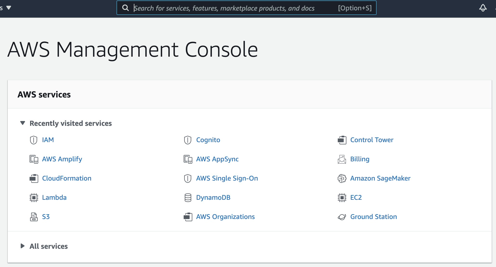
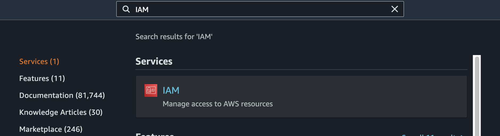
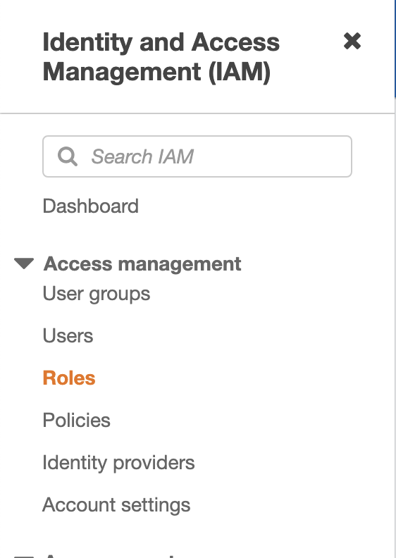
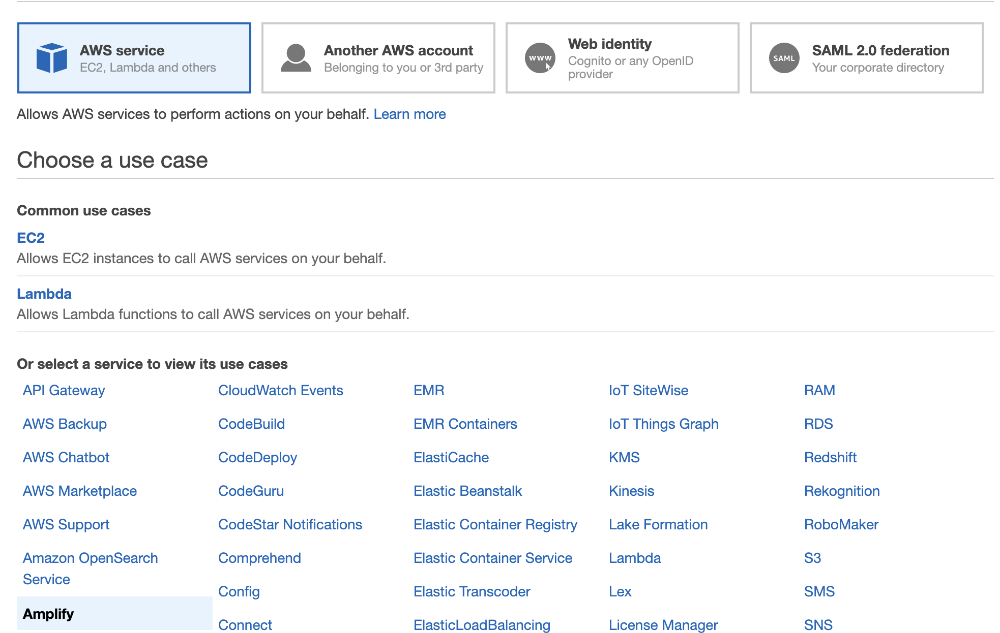
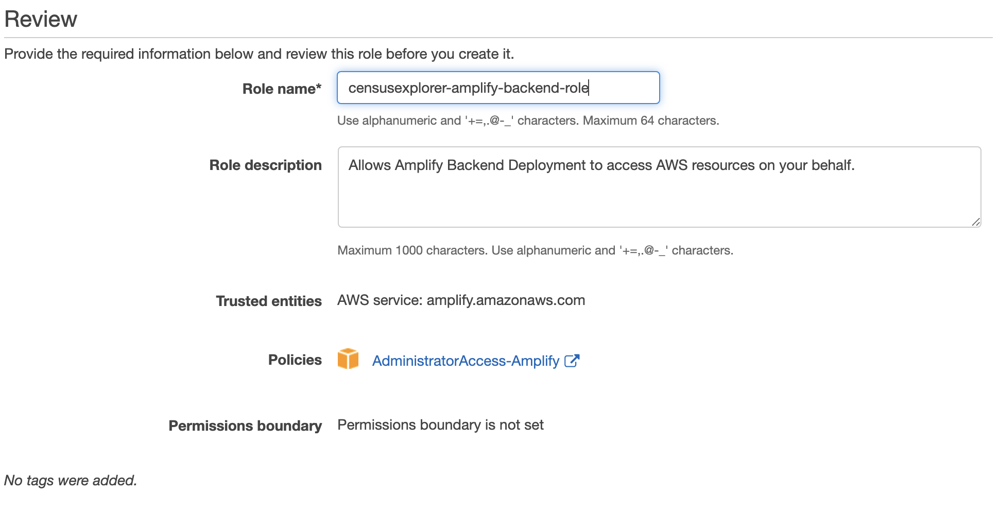
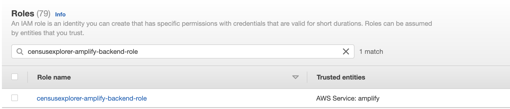
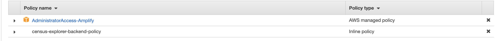
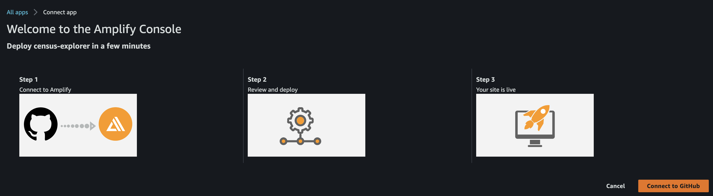
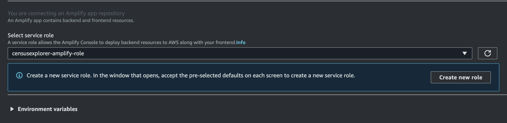

Frontend Deployment
Requirements
For deployment:
- AWS Account
- GitHub Account
- SAM CLI (Note: Step 3: Install Docker is not required)
For prototyping:
Frontend Deployment
Create a Service Role
Please create a new service role in your AWS Account.
- Log into the AWS Console on your AWS Account with IAM Permissions.

2. Search for IAM and click on the first suggestion.

3. Click on Roles in the left sidebar.

4. Click on Create Role
5. Scroll down and click on Amplify

6. Click next until you get to the Review page. Name the role: This example uses 'censusexplorer-amplify-backend-role'

7. Click Create Role.
8. Find your new role by searching for it in the roles search bar. Click on it.

9. Click on Add inline policy
10. Click on the JSON tab, and replace the text box with the contents of this file.
11. Click on Review Policy, and name it appropriately. Eg: 'census-explorer-backend-policy'
12. Click on Create Policy. You should see something similar to this:

Deploy the Frontend
To deploy the frontend of this solution into your AWS Account, press the following button:
This should take you to the following screen: Click on Connect to Github and log in to your Github Account.

From the dropdown, make sure to choose the role that you just made!

Click on save and deploy.